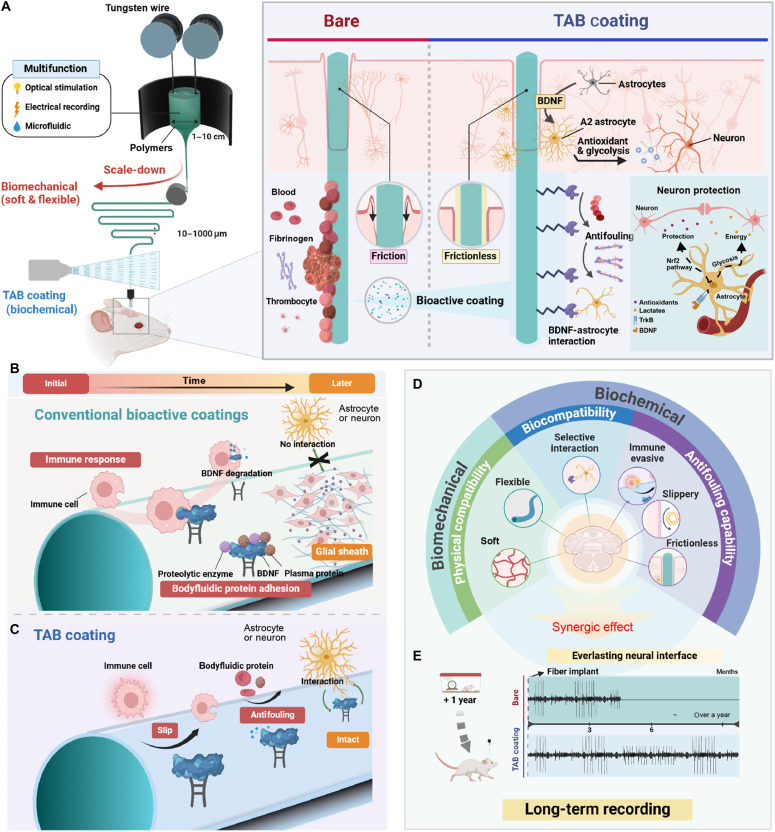

이 연구가 다루는 문제
신경 기록용 유연 섬유에 윤활 계면과 고정화한 뇌유래신경영양인자(BDNF)를 결합해, 비특이적 부착을 억제하면서 신경세포와의 상호작용을 돕습니다. 대표 단일 신경세포 기록은 12개월까지 제시되며, 코팅 유무에 따른 전극별 비교 통계는 별도의 8개월 범위입니다.
신경 기록용 섬유 탐침과 조직 상호작용
신경 프로브는 조직과 오랫동안 접촉하면서 신호를 기록해야 합니다. 불필요한 부착을 줄이는 동시에 필요한 신경세포 상호작용은 유지할 필요가 있습니다. TAB은 유연한 섬유 프로브 표면에서 이러한 선택적 접촉을 다룹니다.
어떻게 접근했나요?
TAB은 윤활 계면에 뇌유래신경영양인자(BDNF) 관련 기능을 결합합니다. 비특이적인 부착을 줄이면서 목표로 하는 신경세포 상호작용을 지원하려는 설계입니다. 프로브의 전기적 기능과 표면의 생물학적 기능은 각각 평가해야 합니다.

유연 신경 섬유와 TAB 코팅의 구성, 기존 코팅과의 차이 및 기계적·생화학적 기능을 설명합니다.
Tae Young Kim, Yeonzu Son, Keun-Young Yook 외. “Bioadaptive liquid-infused multifunctional fibers for long-term neural recording via BDNF stabilization and enhanced neural interaction”. Figure 1. DOI: 10.1126/sciadv.adz1228. CC BY-NC 4.0. 그림 내용은 변경하지 않았습니다.
원그림과 원문 설명 ↗ · DOI: 10.1126/sciadv.adz1228 ↗ · CC BY-NC 4.0 ↗
비상업적 학술 이용에 한해 저자·출처·라이선스 및 변경 여부를 표시하여 사용할 수 있습니다.
무엇을 어떻게 평가했나요?
기록 기간은 전극 수와 분석 기간을 함께 보아야 해석할 수 있습니다. 조직 반응과 전기 기록은 서로 다른 결과를 측정합니다. 확인한 Figure 6 분석만으로 모든 전극의 생존이나 보고되지 않은 동물 수를 추정할 수는 없습니다.
주요 결과
TAB 코팅 섬유에서 최대 12개월의 대표 단일 신경 단위 기록이 제시되었습니다. 비교 통계는 별도의 8개월 기간을 다루며, 코팅 섬유에서는 전극당 검출 단위 수가 유지되고 무코팅 섬유에서는 감소했습니다. 이 두 시간 범위를 합쳐 모든 전극이 12개월 동안 같은 성능을 유지했다거나 기기 수명이 일정 배수 늘었다고 해석할 수는 없습니다.
아직 남아 있는 질문
전극 탈락과 기록·단위 판별 기준을 맞춘 추가 비교가 필요합니다. 관찰 기간이 길다는 이유로 보충자료에서 확인하지 않은 조건을 채울 수는 없습니다. 이 설명은 확인한 결과를 요약하며 원기록 전체를 다시 분석한 것은 아닙니다.
함께 읽을 연구
Multifunctional fibers for simultaneous optical, electrical and chemical interrogation of neural circuits in vivo
출판사 초록과 메타데이터는 기록·광학·유체 전달을 결합한 Canales 등의 연신 섬유를 설명합니다. TAB은 표면 생화학과 숙주 반응에 초점을 더합니다.
외부 본문은 읽지 않았습니다. 관찰 기간은 평가 항목에 따라 달라지므로 보고 기간만으로 기기 수명이 몇 배 늘었다고 판단할 수는 없습니다.
초록을 참고한 소개RESEARCH NEWS
연구 소식
서정목 교수팀, 뇌-컴퓨터 인터페이스 장기 안정성 극복할 신경 전극 코팅 기술 개발 ↗
Bioadaptive Liquid-Infused Multifunctional Fibers for Long-Term Neural Recording via BDNF Stabilization and Enhanced Neural Interaction ↗
뇌·컴퓨터 인터페이스 신호 1년 이상 기록한다 ↗
[22일 대학가] 세종대·중앙대·한양대·연세대 ↗
New paper on neural recording technology published in Science Advances ↗
Device–tissue interfaces: prior studies, ELFS biliary stents and FLUID ureteral stents ↗
해설에 사용한 자료
이 해설은 논문 본문과 원그림을 참고합니다. 보충자료와 원자료의 별도 검토는 완료하지 않았습니다.